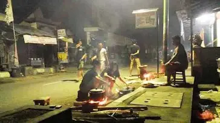
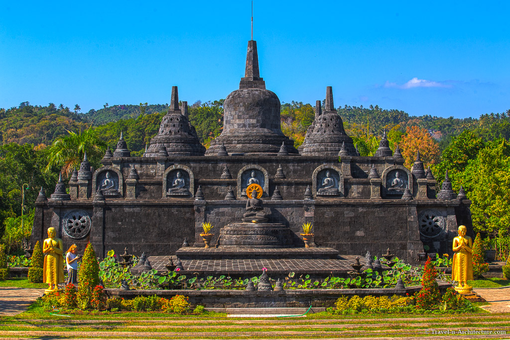
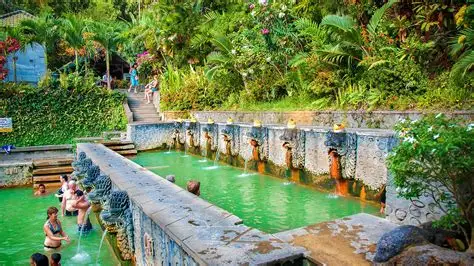
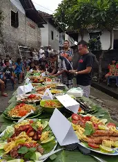
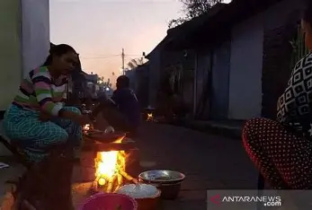
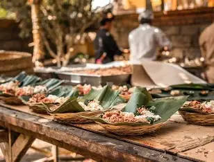

Kecamatan yang memadukan kehangatan tradisi masak komunal paska Nyepi, kedamaian spiritual Vihara terbesar di Bali, dan khasiat penyembuhan dari mata air panas alami peninggalan zaman kuno.
Kecamatan Banjar adalah destinasi komplit yang menawarkan pengalaman spiritual, budaya otentik, dan wisata kebugaran. Terletak strategis di jalur pantai utara, Banjar menyimpan peninggalan sejarah dan tradisi yang masih dipraktikkan kuat hingga hari ini.
Jika perayaan Nyepi di tempat lain berakhir begitu fajar menyingsing, di Banjar kesunyian itu dipecahkan oleh keramaian dadakan di jalanan. Warga berbondong-bondong memindahkan dapur mereka ke pinggir jalan raya dalam tradisi "Nyakan Diwang" yang sangat meriah.
Dari dapur dadakan di pinggir jalan hingga miniatur Candi Borobudur.

Tradisi memasak beramai-ramai di luar rumah (pinggir jalan) pada subuh hari Ngembak Geni (sehari setelah Nyepi). Menjadi simbol penyucian dapur dan momen silaturahmi akrab antar tetangga setelah berdiam diri dalam hening.

Wihara Buddha terbesar di Bali, uniknya memiliki corak arsitektur perpaduan ukiran Bali. Terletak di perbukitan yang tenang, wihara ini juga memiliki replika mini Candi Borobudur yang megah di bagian puncaknya.

Pemandian air panas alami (hot springs) peninggalan zaman kuno dengan arsitektur pancuran batu berbentuk mulut naga. Kandungan belerangnya berkhasiat untuk relaksasi otot dan menyembuhkan penyakit kulit.
Berasal dari kata "Nyakan" yang berarti memasak, dan "Diwang" yang berarti di luar rumah. Tradisi ini harfiahnya bermakna memindahkan aktivitas memasak ke jalanan desa.
Dimulai dini hari (sekitar pukul 03.00 WITA) pada hari Ngembak Geni (satu hari setelah Nyepi), ditandai bunyi kentongan (kulkul) desa yang saling bersahutan memecah keheningan malam.
Selain penyucian dapur (Amati Geni), ini adalah sarana sima krama. Sambil menunggu masakan matang, warga saling berkunjung, bertegur sapa, dan berbagi makanan, menciptakan momen persaudaraan yang sangat kuat.



Jelajahi pemandian air panas alami peninggalan zaman kuno dengan arsitektur pancuran batu berbentuk mulut naga. Kolam bertingkat dengan air sulfur bersuhu 37-38°C di tengah taman tropis.
Terletak di Desa Banjar, sekitar 5 km dari Pantai Lovina. Terdiri dari 3 kolam bertingkat dengan pancuran naga. Berdekatan dengan Brahma Vihara Arama (~1.5 km). Buka setiap hari pukul 08:00-18:00 WITA.
Sumber: Dokumentasi Wisata Bali
Seberapa baik Anda mengenal sejarah dan budaya di Banjar?
Petunjuk 1
Skor Akhir Anda: 0 / 3